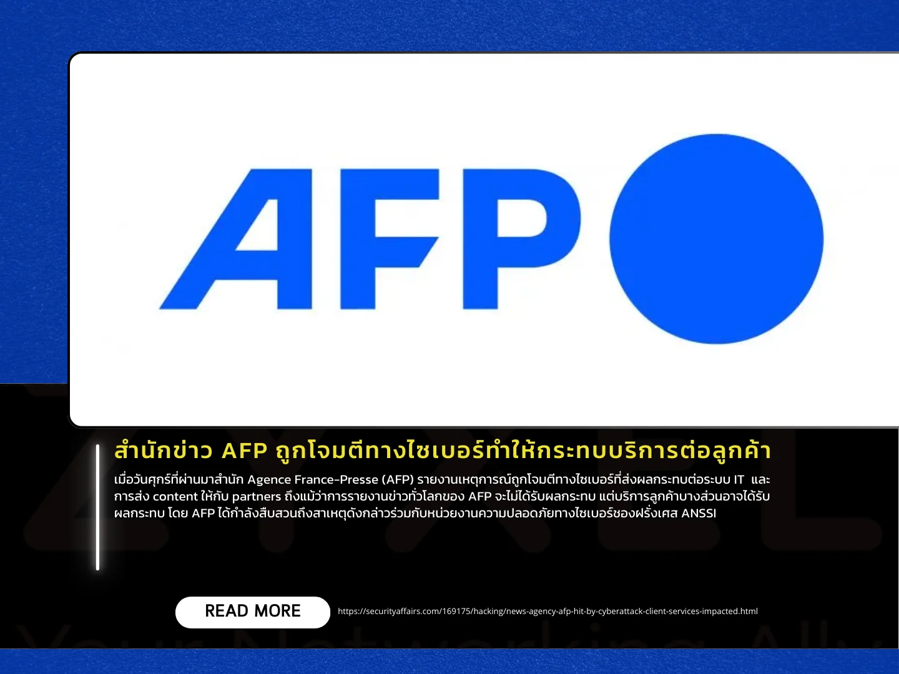

เผยแพร่เมื่อ: 3 ตุลาคม 2567
เมื่อวันศุกร์ที่ผ่านมาสำนัก Agence France-Presse (AFP) รายงานเหตุการณ์ถูกโจมตีทางไซเบอร์ที่ส่งผลกระทบต่อระบบ
IT และการส่ง content ให้กับ partners ถึงแม้ว่าการรายงานข่าวทั่วโลกของ AFP จะไม่ได้รับผลกระทบ
แต่บริการลูกค้าบางส่วนอาจได้รับผลกระทบ โดย AFP
ได้กำลังสืบสวนถึงสาเหตุดังกล่าวร่วมกับหน่วยงานความปลอดภัยทางไซเบอร์ของฝรั่งเศส ANSSI
AFP เป็นสำนักข่าวนานาชาติที่มีภารกิจในการรายงานข่าวอย่างรวดเร็ว ครอบคลุม และผ่านการตรวจสอบข้อเท็จจริงแล้ว
มีเครือข่ายพนักงานกว่า 2,600 คน รวมถึงนักข่าว 1,700 คน ที่ประจำอยู่ใน 260 เมืองใน 150 ประเทศทั่วโลก โดยที่
AFP ให้บริการข่าวหลากหลายรูปแบบ เช่น วิดีโอ ข้อความ ภาพถ่าย และเสียง รวมถึงให้บริการใน 6 ภาษา ได้แก่
ฝรั่งเศส อังกฤษ สเปน โปรตุเกส เยอรมัน และอาหรับ
นอกจากนี้ BleepingComputer ได้รายงานเพิ่มเติมว่า AFP เตือนบริษัทสื่อต่างๆ
ว่าการโจมตีครั้งนี้อาจส่งผลให้ข้อมูลรับรอง FTP ซึ่งใช้ในการรับเนื้อหาจาก AFP อาจถูกละเมิด จึงขอแนะนำให้
partners รีบเปลี่ยนรหัสผ่านและตรวจสอบระบบการรับเนื้อหาให้ปลอดภัยเพื่อป้องกันความเสี่ยงที่อาจเกิดขึ้น
แหล่งข่าว https://securityaffairs.com/169175/hacking/news-agency-afp-hit-by-cyberattack-client-services-impacted.html